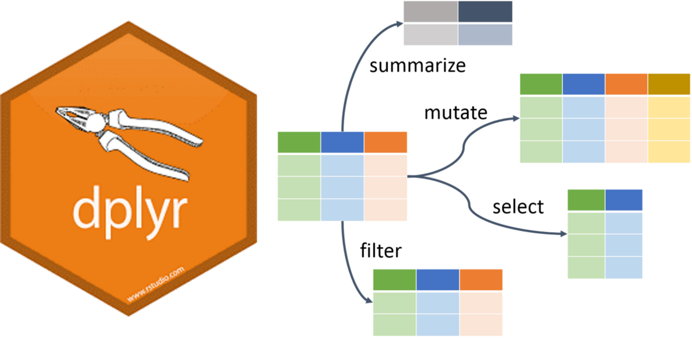

# A tibble: 3,850 × 18
country who_region year pop incidence_100k incidence_number hiv_percent
<chr> <chr> <int> <int> <dbl> <int> <dbl>
1 Afghanis… EMR 2000 2.01e7 190 38000 0.36
2 Afghanis… EMR 2001 2.10e7 189 40000 0.3
3 Afghanis… EMR 2002 2.20e7 189 42000 0.26
4 Afghanis… EMR 2003 2.31e7 189 44000 0.23
5 Afghanis… EMR 2004 2.41e7 189 46000 0.22
6 Afghanis… EMR 2005 2.51e7 189 47000 0.22
7 Afghanis… EMR 2006 2.59e7 189 49000 0.22
8 Afghanis… EMR 2007 2.66e7 189 50000 0.23
9 Afghanis… EMR 2008 2.73e7 189 52000 0.23
10 Afghanis… EMR 2009 2.80e7 189 53000 0.24
# ℹ 3,840 more rows
# ℹ 11 more variables: hiv_incidence_100k <dbl>, hiv_number <int>,
# mort_nohiv_100k <dbl>, mort_nohiv_number <int>, mort_hiv_100k <dbl>,
# mort_hiv_number <int>, mort_100k <dbl>, mort_number <int>,
# case_fatality_ratio <dbl>, new_incidence_100k <dbl>,
# case_detection_percent <dbl>Exploring Data with R
What is Exploratory Data Analysis?
EDA is the critical first step.
EDA is a state of mind.
EDA is exploring your ideas.
EDA has no strict rules.
EDA helps understand your data.
EDA is an iterative cycle.
EDA is a creative process.

Definition of EDA
“It is mostly a philosophy of data analysis where the researcher examines the data without any pre-conceived ideas in order to discover what the data can tell him or her about the phenomena being studied.”
“detective work – numerical detective work – or counting detective work – or graphical detective work”
- Tukey, 1977 Page 1, Exploratory Data Analysis
How to do EDA?
The easiest way to do EDA is to use questions as tools to guide your investigation.
EDA is an important part of any data analysis, even if the questions are known already.
“There are no routine statistical questions, only questionable statistical routines.”
— Sir David Cox
“Far better an approximate answer to the right question, which is often vague, than an exact answer to the wrong question, which can always be made precise.”
— John Tukey
Asking the right questions
Key to asking quality questions is to generate a large quantity of questions.
It is difficult to ask revealing questions at the start of the analysis.
But, each new question will expose a new aspect and increase your chance of making a discovery.
What Questions to ask?
What type of variation occurs within your variables?
What type of covariation occurs between your variables?
Whether your data meets your expectations or not.
Whether the quality of your data is robust or not.
The Process of EDA
- Import
- Tidy
- Explore
- Transform
- Visualize
- Transform
- Visualise …
- …
6 W’s of Spatial EDA / ESDA
What?
Where?
When?
Who?
Why?
How?
Questions to ask:
What type of variation occurs within your variables?
What type of covariation occurs between your variables?
Whether your data meets your expectations or not.
Whether the quality of your data is robust or not.
Steps for any good data anlysis project
Preparing Tidy Data
- Data Cleaning
- Data Wrangling
Data Exploration
- Data Transformation
- Data Visualization
Statistical Analysis
Prepare Results
Draw Inferences
Report Findings
Data Wrangling in R
dplyr Package
The dplyr is a powerful R-package to manipulate, clean and summarize unstructured data.
In short, it makes data exploration and data manipulation easy and fast in R.

Verbs of the dplyr
- There are many verbs in
dplyrthat are useful.

Using the pipe operator (|> or %>%)

Let us load some data
library(tidyverse)
library(here)
library(rio)
filepath <- here('data', "who_tubercolosis_data.csv")
tb <- filepath |> import(setclass = 'tibble')
tbTake a Quick Look at the data
tb |>
glimpse()Rows: 3,850
Columns: 18
$ country <chr> "Afghanistan", "Afghanistan", "Afghanistan", "A…
$ who_region <chr> "EMR", "EMR", "EMR", "EMR", "EMR", "EMR", "EMR"…
$ year <int> 2000, 2001, 2002, 2003, 2004, 2005, 2006, 2007,…
$ pop <int> 20093756, 20966463, 21979923, 23064851, 2411897…
$ incidence_100k <dbl> 190, 189, 189, 189, 189, 189, 189, 189, 189, 18…
$ incidence_number <int> 38000, 40000, 42000, 44000, 46000, 47000, 49000…
$ hiv_percent <dbl> 0.36, 0.30, 0.26, 0.23, 0.22, 0.22, 0.22, 0.23,…
$ hiv_incidence_100k <dbl> 0.68, 0.57, 0.49, 0.44, 0.41, 0.42, 0.42, 0.43,…
$ hiv_number <int> 140, 120, 110, 100, 100, 100, 110, 120, 120, 13…
$ mort_nohiv_100k <dbl> 67.00, 62.00, 56.00, 57.00, 51.00, 46.00, 42.00…
$ mort_nohiv_number <int> 14000, 13000, 12000, 13000, 12000, 12000, 11000…
$ mort_hiv_100k <dbl> 0.15, 0.17, 0.27, 0.25, 0.21, 0.19, 0.18, 0.17,…
$ mort_hiv_number <int> 31, 35, 60, 57, 50, 48, 46, 45, 48, 55, 56, 61,…
$ mort_100k <dbl> 67.00, 62.00, 56.00, 57.00, 51.00, 46.00, 42.00…
$ mort_number <int> 14000, 13000, 12000, 13000, 12000, 12000, 11000…
$ case_fatality_ratio <dbl> NA, NA, NA, NA, NA, NA, NA, NA, NA, NA, NA, NA,…
$ new_incidence_100k <dbl> 35, 48, 63, 60, 76, 87, 98, 108, 104, 93, 97, 9…
$ case_detection_percent <dbl> 19, 26, 33, 32, 40, 46, 52, 57, 55, 49, 51, 50,…Check the first few rows
tb |>
head()# A tibble: 6 × 18
country who_region year pop incidence_100k incidence_number hiv_percent
<chr> <chr> <int> <int> <dbl> <int> <dbl>
1 Afghanist… EMR 2000 2.01e7 190 38000 0.36
2 Afghanist… EMR 2001 2.10e7 189 40000 0.3
3 Afghanist… EMR 2002 2.20e7 189 42000 0.26
4 Afghanist… EMR 2003 2.31e7 189 44000 0.23
5 Afghanist… EMR 2004 2.41e7 189 46000 0.22
6 Afghanist… EMR 2005 2.51e7 189 47000 0.22
# ℹ 11 more variables: hiv_incidence_100k <dbl>, hiv_number <int>,
# mort_nohiv_100k <dbl>, mort_nohiv_number <int>, mort_hiv_100k <dbl>,
# mort_hiv_number <int>, mort_100k <dbl>, mort_number <int>,
# case_fatality_ratio <dbl>, new_incidence_100k <dbl>,
# case_detection_percent <dbl>Check the dimensions and the column names
dim(tb)
names(tb)[1] 3850 18 [1] "country" "who_region" "year"
[4] "pop" "incidence_100k" "incidence_number"
[7] "hiv_percent" "hiv_incidence_100k" "hiv_number"
[10] "mort_nohiv_100k" "mort_nohiv_number" "mort_hiv_100k"
[13] "mort_hiv_number" "mort_100k" "mort_number"
[16] "case_fatality_ratio" "new_incidence_100k" "case_detection_percent"Lets find the unique countries in the bottom 50 rows of the dataset
# without the pipe
unique(tail(tb, n = 50)$country)
# with the pipe
tb |>
tail(50) |>
distinct(country)
[1] "Yemen" "Zambia" "Zimbabwe"# A tibble: 3 × 1
country
<chr>
1 Yemen
2 Zambia
3 Zimbabwedistinct() and count()
The distinct() function will return the distinct values of a column, while count() provides both the distinct values of a column and then number of times each value shows up.
tb |>
distinct(who_region)# A tibble: 6 × 1
who_region
<chr>
1 EMR
2 EUR
3 AFR
4 WPR
5 AMR
6 SEA tb |>
count(who_region)# A tibble: 6 × 2
who_region n
<chr> <int>
1 AFR 835
2 AMR 808
3 EMR 396
4 EUR 967
5 SEA 196
6 WPR 648arrange()
The arrange() function does what it sounds like. It takes a data frame or tbl and arranges (or sorts) by column(s) of interest.
The first argument is the data, and subsequent arguments are columns to sort on.
Use the desc() function to arrange by descending.
tb |>
count(who_region) |>
arrange(n)# A tibble: 6 × 2
who_region n
<chr> <int>
1 SEA 196
2 EMR 396
3 WPR 648
4 AMR 808
5 AFR 835
6 EUR 967tb |>
count(who_region) |>
arrange(-n) # use can also use arrange(desc(n))# A tibble: 6 × 2
who_region n
<chr> <int>
1 EUR 967
2 AFR 835
3 AMR 808
4 WPR 648
5 EMR 396
6 SEA 196Logical Operators in R
If you want to satisfy all of multiple conditions, you can use the “and” operator,
&.The “or” operator
|(the vertical pipe character, shift-backslash) will return a subset that meet any of the conditions.

filter()
Filter 2015 and above
tb |>
filter(year >= 2015)# A tibble: 648 × 18
country who_region year pop incidence_100k incidence_number hiv_percent
<chr> <chr> <int> <int> <dbl> <int> <dbl>
1 Afghanis… EMR 2015 3.37e7 189 64000 0.3
2 Afghanis… EMR 2016 3.47e7 189 65000 0.31
3 Afghanis… EMR 2017 3.55e7 189 67000 0.31
4 Albania EUR 2015 2.92e6 16 480 0.82
5 Albania EUR 2016 2.93e6 16 480 0.83
6 Albania EUR 2017 2.93e6 20 580 0.85
7 Algeria AFR 2015 3.99e7 74 30000 0.58
8 Algeria AFR 2016 4.06e7 70 29000 0.6
9 Algeria AFR 2017 4.13e7 70 29000 0.62
10 American… WPR 2015 5.55e4 8.3 5 0.1
# ℹ 638 more rows
# ℹ 11 more variables: hiv_incidence_100k <dbl>, hiv_number <int>,
# mort_nohiv_100k <dbl>, mort_nohiv_number <int>, mort_hiv_100k <dbl>,
# mort_hiv_number <int>, mort_100k <dbl>, mort_number <int>,
# case_fatality_ratio <dbl>, new_incidence_100k <dbl>,
# case_detection_percent <dbl>Filter India
tb |>
filter(country == "India")# A tibble: 18 × 18
country who_region year pop incidence_100k incidence_number hiv_percent
<chr> <chr> <int> <int> <dbl> <int> <dbl>
1 India SEA 2000 1.05e9 289 3040000 7
2 India SEA 2001 1.07e9 288 3090000 7
3 India SEA 2002 1.09e9 287 3130000 7
4 India SEA 2003 1.11e9 285 3160000 7
5 India SEA 2004 1.13e9 282 3180000 7
6 India SEA 2005 1.14e9 279 3190000 7
7 India SEA 2006 1.16e9 274 3180000 7
8 India SEA 2007 1.18e9 268 3160000 7
9 India SEA 2008 1.20e9 261 3130000 6.8
10 India SEA 2009 1.21e9 254 3090000 6.6
11 India SEA 2010 1.23e9 247 3050000 6.3
12 India SEA 2011 1.25e9 241 3000000 5.9
13 India SEA 2012 1.26e9 234 2960000 5.4
14 India SEA 2013 1.28e9 228 2920000 4.9
15 India SEA 2014 1.29e9 223 2880000 4.3
16 India SEA 2015 1.31e9 217 2840000 4
17 India SEA 2016 1.32e9 211 2790000 3.3
18 India SEA 2017 1.34e9 204 2740000 3.1
# ℹ 11 more variables: hiv_incidence_100k <dbl>, hiv_number <int>,
# mort_nohiv_100k <dbl>, mort_nohiv_number <int>, mort_hiv_100k <dbl>,
# mort_hiv_number <int>, mort_100k <dbl>, mort_number <int>,
# case_fatality_ratio <dbl>, new_incidence_100k <dbl>,
# case_detection_percent <dbl>Filter by year and country
tb |>
filter(year >= 2015 & country == "India")# A tibble: 3 × 18
country who_region year pop incidence_100k incidence_number hiv_percent
<chr> <chr> <int> <int> <dbl> <int> <dbl>
1 India SEA 2015 1.31e9 217 2840000 4
2 India SEA 2016 1.32e9 211 2790000 3.3
3 India SEA 2017 1.34e9 204 2740000 3.1
# ℹ 11 more variables: hiv_incidence_100k <dbl>, hiv_number <int>,
# mort_nohiv_100k <dbl>, mort_nohiv_number <int>, mort_hiv_100k <dbl>,
# mort_hiv_number <int>, mort_100k <dbl>, mort_number <int>,
# case_fatality_ratio <dbl>, new_incidence_100k <dbl>,
# case_detection_percent <dbl>%in% function
To
filter()a categorical variable for only certain levels, we can use the%in%operator.Let’s see data from India, Nepal, Pakistan and Bangladesh First we will have to figure out how those are spelled in this dataset.
Open the spreadsheet viewer and find out.
We’ll see a way to find them in code later on in the course.
# Create the Indian Subcontinent Variable
indian_subcont <- c(
"India",
"Nepal",
"Pakistan",
"Bangladesh",
"Afghanistan"
)
# Filter using the %in% function
tb |>
filter(country %in% indian_subcont) %>%
distinct(country)
# A tibble: 5 × 1
country
<chr>
1 Afghanistan
2 Bangladesh
3 India
4 Nepal
5 Pakistan summarize()
The
summarize()function summarizes multiple values to a single value.On its own the
summarize()function doesn’t seem to be all that useful.
The dplyr package provides a few convenience functions called n() and n_distinct() that tell you the number of observations or the number of distinct values of a particular variable.
summarize() is the same as summarise()
tb |>
summarize(mean_hiv_percent = mean(hiv_percent, na.rm = TRUE),
sd_hiv_percent = sd(hiv_percent, na.rm = TRUE))# A tibble: 1 × 2
mean_hiv_percent sd_hiv_percent
<dbl> <dbl>
1 12.1 17.7group_by()
We saw that
summarize()isn’t that useful on its own. Neither isgroup_by().All this does is takes an existing data frame and converts it into a grouped data frame where operations are performed by group.
The real power comes in where
group_by()andsummarize()are used together. First, write thegroup_by()statement. Then pipe the result to a call tosummarize().
tb |>
group_by(who_region) |>
summarize(mean_inc = mean(incidence_100k, na.rm = TRUE),
sd_inc = sd(incidence_100k, na.rm = TRUE))# A tibble: 6 × 3
who_region mean_inc sd_inc
<chr> <dbl> <dbl>
1 AFR 297. 248.
2 AMR 32.8 45.6
3 EMR 83.7 123.
4 EUR 42.7 51.1
5 SEA 260. 151.
6 WPR 126. 153. mutate()
- Mutate creates a new variable or modifies an existing one.

if_else()
Lets create a column called ind_sub if the country is in the Indian Subcontinent.
tb |>
mutate(indian_sub1 = if_else(country %in% indian_subcont,
"Indian Subcontinent", "Others")) |>
select(country, indian_sub1) |>
distinct()# A tibble: 218 × 2
country indian_sub1
<chr> <chr>
1 Afghanistan Indian Subcontinent
2 Albania Others
3 Algeria Others
4 American Samoa Others
5 Andorra Others
6 Angola Others
7 Anguilla Others
8 Antigua and Barbuda Others
9 Argentina Others
10 Armenia Others
# ℹ 208 more rowscase_when()
Alternative of if_else()

if_else() vs case_when()
Note that the if_else() function may result in slightly shorter code if you only need to code for 2 options.
For more options, nested if_else() statements become hard to read and could result in mismatched parentheses so case_when() will be a more elegant solution.
join()
Typically in a data science or data analysis project one would have to work with many sources of data.
The researcher must be able to combine multiple datasets to answer the questions he or she is interested in.
As with the other
dplyrverbs, there are different families of verbs that are designed to work with relational data and one of the most commonly used family of verbs are the mutating joins.

More on join()
left_join(x, y)which combines all columns in data framexwith those in data frameybut only retains rows fromx.right_join(x, y)also keeps all columns but operates in the opposite direction, returning only rows fromy.full_join(x, y)combines all columns ofxwith all columns ofyand retains all rows from both data frames.inner_join(x, y)combines all columns present in eitherxorybut only retains rows that are present in both data frames.anti_join(x, y)returns the columns fromxonly and retains rows ofxthat are not present iny.anti_join(y, x)returns the columns fromyonly and retains rows ofythat are not present inx.
Visual representation of the left_join()
Visual representation of the right_join()
Visual representation of the full_join()
pivot()
Most often, when working with our data we may have to reshape our data from long format to wide format and back. We can use the pivot family of functions to achieve this task.

Other Useful Functions
drop_na()
The drop_na() function is extremely useful for when we need to subset a variable to remove missing values.
select()
While the filter() function allows you to return only certain rows matching a condition, the select() function returns only certain columns. The first argument is the data, and subsequent arguments are the columns you want.
More Resources for dplyr
Check out the Data Wrangling Cheatsheet that covers dplyr and tidyr functions.
Review the Tibbles chapter of the excellent, free R for Data Science book.
Check out the Transformations chapter to learn more about the
dplyrpackage. Note that this chapter also uses the graphing packageggplot2which we have covered yesterday.